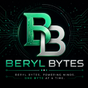

Business Administration
Business thinking, strategy, customer perspective and practical digital problem solving.
I'm Beryl — a business-minded digital creative exploring the space between technology, design, communication and cybersecurity.

A LITTLE CONTEXT
I'm Beryl Munyao, a multidisciplinary digital creative with an interest in technology, business, design and communication.
I am currently studying Cybersecurity and CCNA through Cisco Networking Academy, while developing practical experience in web development, UI/UX, digital communication and technology.
My background also includes Business Administration, ICDL digital skills and freelance writing. This gives me a combination of business thinking, communication and technical curiosity.
I enjoy turning ideas into useful digital experiences that are visually intentional, easy to understand and built with purpose.
Business thinking, strategy, customer perspective and practical digital problem solving.
Strong foundation in digital productivity, information handling and everyday technology.
Writing, research, editing and turning ideas into clear digital communication.
Currently studying Cybersecurity and CCNA through Cisco Networking Academy.
Selected digital projects where design, business thinking and technology meet.
THE UPGRADE
A live digital project focused on presenting a modern, clear and engaging online experience.
BERYL PHARMACY
A digital pharmacy and health experience currently in progress. The preview is available so visitors can follow the direction and evolution of the product.
A MULTIDISCIPLINARY TOOLKIT
Cisco Networking Academy · building a stronger technical foundation in networks, security and digital infrastructure.
HAVE A PROJECT IN MIND?
Have a website, digital product, content project, creative idea or collaboration in mind? Send me a message and I'll get back to you.